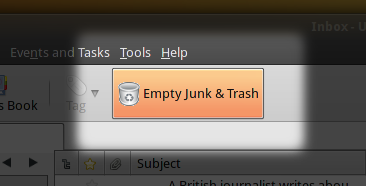
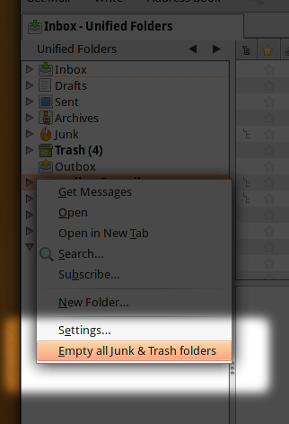
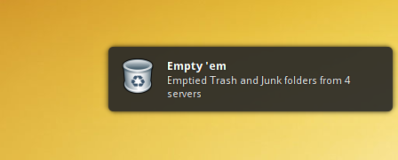
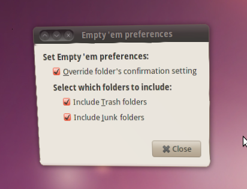

Empty 'em
Empty all your Trash and Junk folders in one fell swoop!
In action ...




Introduction
Empty 'em is a simple Thunderbird extension that empties Junk and Trash folders from all configured servers. The extension provides a menu item (), a folder pane context menu item, and a toolbar button to do so.
Background
In Thunderbird, I usually have around half-a-dozen email accounts set up. Most of them Gmail accounts. Very often, Gmail's Junk filter catches tons of Junk email and populates the Junk folders in Thunderbird. After manually cleaning up the Inbox folders and deleting unwanted email, the Trash folders are also populated.
Manually going through all the Junk and Trash folders to empty them, is tedious.
That is what prompted me to write this extension. I hope someone out there finds it helpful too.
Download
The add-on is not quite ready to be on the
Add-ons for Thunderbird website. But source and installation files (
.xpi) files can be found on
the project page on GitHub. Feel free to fork!
{kind=link}
{kind=link}
{kind=link}
{kind=link}